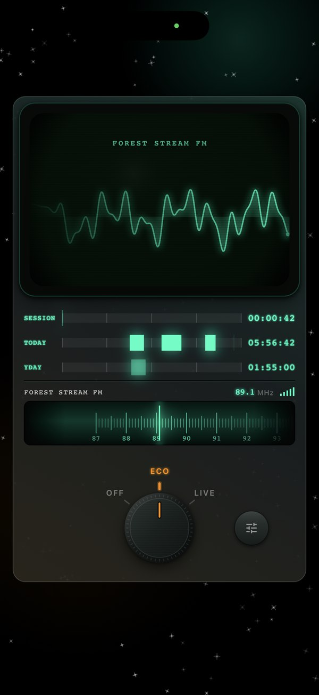
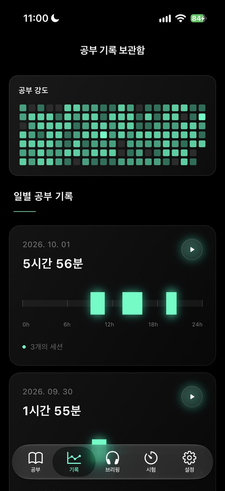
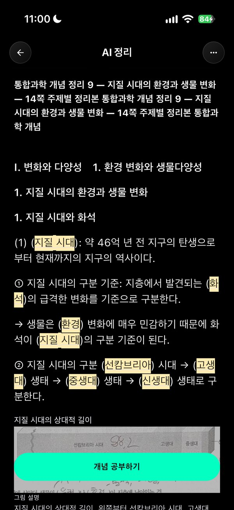
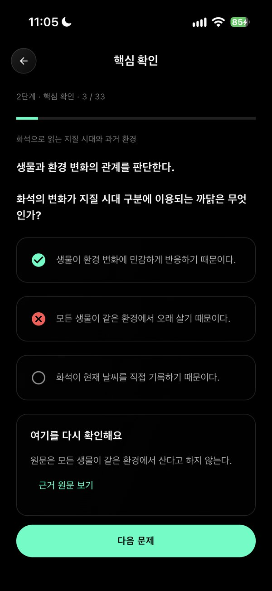

고객 지원
클라크 3.0을 사용해 주셔서 감사합니다. 앉기만 하면 공부가 기록되고, 프린트를 찍으면 AI가 정리해 읽어 줘요. 궁금한 점이나 문제가 있으면 아래로 문의해 주세요.

앉기만 하면 공부 기록

공부 잔디와 날짜별 기록

AI 브리핑: 프린트 정리

확인 문제와 다시 보기
자주 묻는 질문
카메라 권한이 왜 필요한가요?
두 가지에 써요. 공부 시간 측정(자리에 앉아 공부하는지 알아보고 타임랩스를 남기는 데)과, 브리핑에서 프린트를 찍을 때예요.
공부할 때 카메라 영상이 서버로 가나요?
아니요. 공부 측정 영상은 기기 안(On-Device)에서만 분석되고 서버로 보내지 않아요. 서버로 가는 건 브리핑을 만들려고 직접 올린 프린트 사진뿐이에요.
휴식은 어떻게 쌓이나요?
5분 공부할 때마다 휴식 1분이 쌓여요(최대 20분). 자리를 비우면 쌓인 휴식을 쓰고, 휴식 안에 돌아오면 연속 공부가 이어져요. 휴식을 다 쓰면 마지막으로 감지된 시각에 공부가 끝난 것으로 기록돼요.
ECO와 LIVE는 뭐가 다른가요?
ECO는 카메라 미리보기 없이 감지 간격을 늘려 배터리를 아껴요. LIVE는 카메라 화면을 보면서 측정해요. 두 모드를 바꿔도 측정은 이어져요.
공부한 시간이 기록되지 않았어요.
1분 미만의 측정은 기록에 남기지 않아요. 측정 중 앱을 나가 있으면 그동안은 자리를 비운 것으로 보고 휴식을 써요.
브리핑 정리가 끝나지 않아요.
브리핑의 AI 정리와 음성 만들기는 인터넷 연결이 필요해요. 쪽 수에 따라 몇 분 걸릴 수 있고, 앱을 닫았다 다시 열어도 진행 상황을 이어서 확인할 수 있어요.
인터넷 없이도 쓸 수 있나요?
공부 측정·기록·시험 타이머는 인터넷 없이도 그대로 쓸 수 있어요. 브리핑의 새 정리와 새 음성은 인터넷이 필요하고, 한 번 받은 음성은 다시 들을 수 있어요.
프린트를 지우면 어떻게 되나요?
기기에 있는 사진·정리·음성과 함께 서버에 저장된 사진과 정리 자료도 지워져요. 인터넷이 없을 때 지웠다면 다음에 연결될 때 서버에서 지워요.
공부 기록이 백업되나요?
iPhone의 iCloud에 자동으로 백업돼, 앱을 다시 설치해도 공부 기록과 시험을 되찾을 수 있어요. 프린트 사진은 iCloud에 백업되지 않아요.
다른 사람이 카메라에 잡히면 어떻게 되나요?
클라크는 특정 인물을 알아보지 않고 사람(Person)의 형태만 감지해요. 본인만 보이는 곳에서 공부하면 가장 정확해요.
문제 해결
- 공부 중인데 자꾸 끊겨요: 상반신이 화면에 충분히 크게 보이도록 폰 위치를 조정해 주세요. 너무 멀면 몸이 작게 잡혀 놓칠 수 있어요.
- 인식이 잘 안 돼요: 너무 어둡지 않은지, 카메라 렌즈에 이물질이 없는지 확인해 주세요.
- 폰이 뜨거워져요: ECO 모드를 쓰면 감지 간격을 늘려 발열과 배터리 사용을 줄여요.
본 페이지의 내용은 최신 개인정보 처리방침을 따릅니다.
개인정보 처리방침
시행일: 2026년 10월 2일 (클라크 3.0)
'클라크'(이하 '앱')는 이용자의 개인정보를 소중히 다루며 「개인정보 보호법」 등 관련 법령을 지킵니다. 이 방침은 앱이 어떤 정보를 왜 처리하고, 어디에 보관하며, 언제 지우는지 설명합니다. 앱은 회원가입이 없으며 이름·이메일·전화번호를 수집하지 않습니다.
1. 처리하는 정보
- 공부 측정 카메라 영상: 자리에 사람이 있는지만 기기 안의 AI가 감지합니다(얼굴 식별·생체 정보 수집 없음). 영상은 서버로 전송되지 않습니다. 타임랩스용 사진은 기기에만 저장됩니다.
- 공부 기록·시험 설정: 공부 시간, 휴식, 시험 일정 등. 기기에 저장되며, 이용자 본인의 iCloud에 백업됩니다.
- 브리핑 자료: 이용자가 직접 올린 프린트 사진, AI가 만든 정리·문제, 학습 진행 상황.
- 익명 식별자: 브리핑을 쓸 때 자동으로 만들어지는 익명 계정 ID. 이용자를 직접 알아볼 수 있는 정보는 포함하지 않습니다.
- 이용 통계·오류 정보: 앱 이용 통계와 오류 기록, 기기 모델·OS 버전 등.
2. 이용 목적
- 공부 시간 자동 측정, 기록·통계와 타임랩스 제공
- 브리핑: 프린트를 정리하고, 개념을 읽어 주고, 확인 문제를 만드는 기능 제공
- 앱 품질 개선과 오류 해결
3. 보관과 파기
- 기기 정보: 이용자가 지우거나 앱을 삭제할 때까지 기기에 보관됩니다. 설정의 초기화로 지울 수 있습니다.
- 서버의 브리핑 자료: 이용자가 프린트를 지우면 서버의 사진과 정리 자료도 함께 지웁니다. 앱만 삭제하면 서버 자료가 남을 수 있으니, 지우기를 원하면 아래 이메일로 요청해 주세요.
- 이용 통계·오류 정보: 각 서비스의 보관 기간에 따라 자동으로 지워집니다.
4. 처리 위탁과 국외 이전
- Supabase Inc.(미국) — 브리핑 자료 저장과 익명 인증. 서버 위치: 대한민국 서울(AWS ap-northeast-2).
- OpenAI, L.L.C.(미국) — 프린트 사진·글을 분석해 정리와 확인 문제를 만듭니다. API로 보낸 데이터는 OpenAI 정책에 따라 모델 학습에 쓰이지 않습니다.
- Google LLC(미국) — 정리한 개념 글을 음성으로 바꾸는 Google Cloud Text-to-Speech, 이용 통계(Firebase Analytics)와 오류 기록(Firebase Crashlytics).
- Apple Inc.(미국) — 이용자 본인 iCloud 계정으로의 공부 기록 백업.
- 국외 이전은 브리핑 등 해당 기능을 쓸 때 인터넷으로 전송되는 방식으로 이루어지며, 브리핑을 쓰지 않으면 프린트 관련 정보는 전송되지 않습니다.
5. 이용자의 권리
- 카메라·사진 권한은 iPhone 설정에서 언제든 철회할 수 있습니다.
- 공부 기록은 앱의 설정 → 초기화로, 프린트는 브리핑에서 삭제로 지울 수 있습니다.
- 서버에 남은 자료의 열람·삭제를 원하면 아래 이메일로 요청해 주세요.
6. 문의